Harnessed Dispatch
Canonical skill · Full PNG
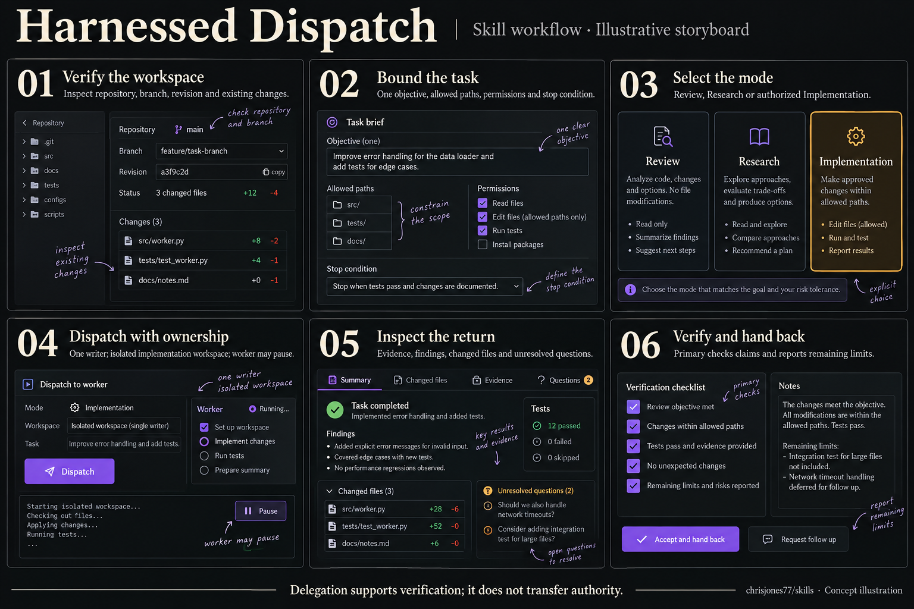
Read the workflow transcript
- Verify the workspace — inspect repository, branch, revision and existing changes.
- Bound the task — one objective, allowed paths, permissions and stop condition.
- Select the mode — Review, Research or authorized Implementation.
- Dispatch with ownership — one writer; isolated implementation workspace; worker may pause.
- Inspect the return — evidence, findings, changed files and unresolved questions.
- Verify and hand back — primary checks claims and reports remaining limits.
Delegation supports verification; it does not transfer authority.
Human acceptance: pending.
Project Vault Operator
Canonical skill · Full PNG
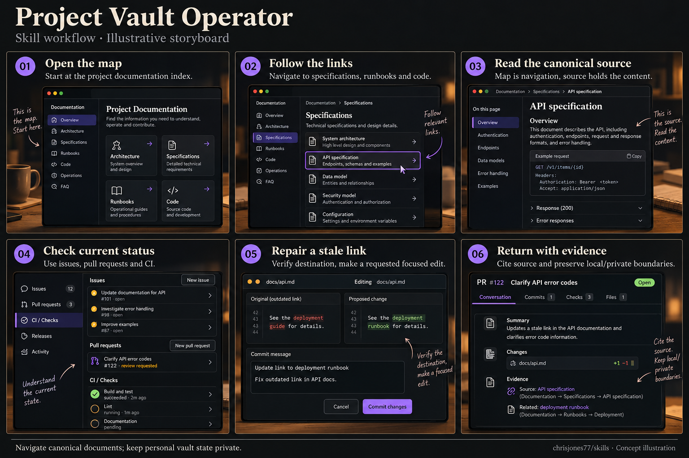
Read the workflow transcript
- Open the map — start at the project documentation index.
- Follow the links — navigate to specifications, runbooks and code.
- Read the canonical source — map is navigation, source holds the content.
- Check current status — use issues, pull requests and CI.
- Repair a stale link — verify destination, make a requested focused edit.
- Return with evidence — cite source and preserve local/private boundaries.
Navigate canonical documents; keep personal vault state private.
Human acceptance: pending.
Gentle Boss · Call and Response
Canonical skill · Full PNG
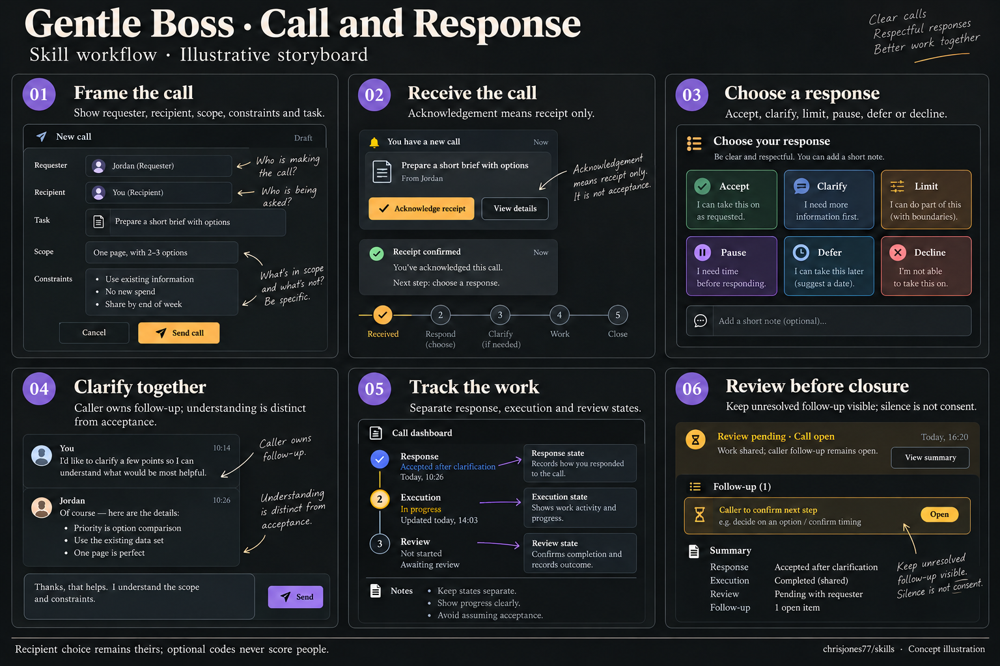
Read the workflow transcript
- Frame the call — show requester, recipient, scope, constraints and task.
- Receive the call — acknowledgement means receipt only.
- Choose a response — accept, clarify, limit, pause, defer or decline.
- Clarify together — caller owns follow-up; understanding is distinct from acceptance.
- Track the work — separate response, execution and review states.
- Review before closure — keep the call open while required review or follow-up remains outstanding; silence is not consent.
Recipient choice remains theirs; optional codes never score people.
Human acceptance: pending.
Creative Seed Development
Canonical skill · Full PNG
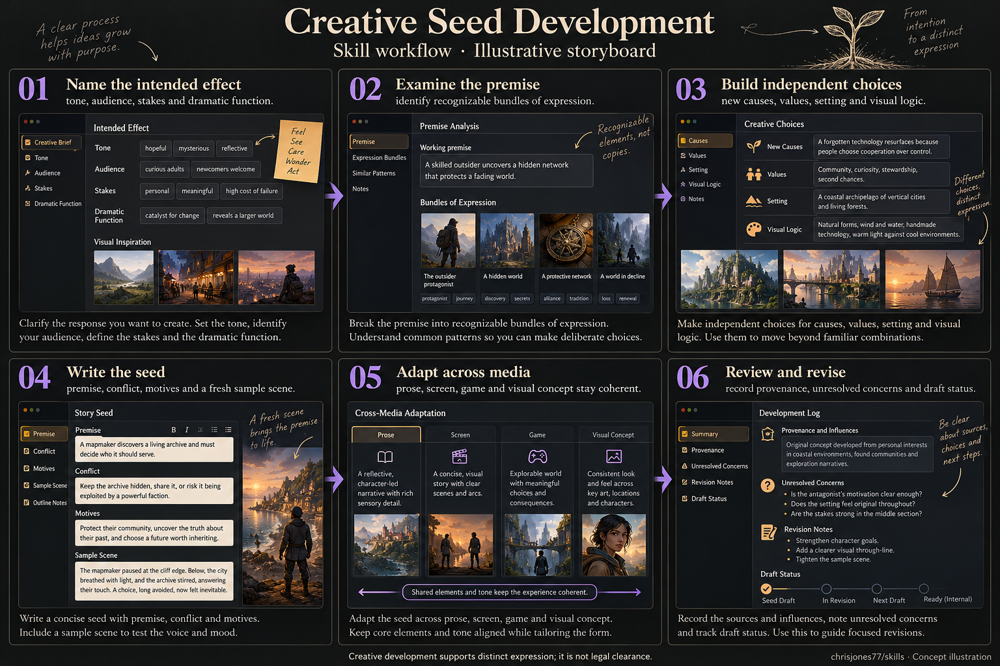
Read the workflow transcript
- Name the intended effect — tone, audience, stakes and dramatic function.
- Examine the premise — identify recognizable bundles of expression.
- Build independent choices — new causes, values, setting and visual logic.
- Write the seed — premise, conflict, motives and a fresh sample scene.
- Adapt across media — prose, screen, game and visual concept stay coherent.
- Review and revise — record provenance, unresolved concerns and draft status.
Creative development supports distinct expression; it is not legal clearance.
Human acceptance: pending.
EGBC AI Professional Practice
Canonical skill · Full PNG
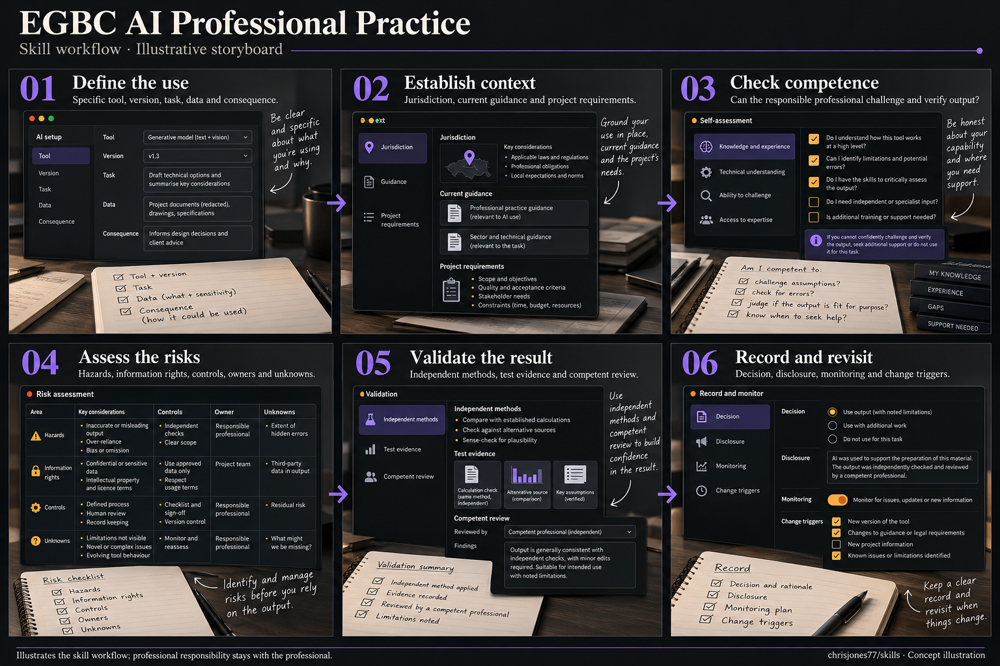
Read the workflow transcript
- Define the use — specific tool, version, task, data and consequence.
- Establish context — jurisdiction, current guidance and project requirements.
- Check competence — can the responsible professional challenge and verify output?
- Assess the risks — hazards, information rights, controls, owners and unknowns.
- Validate the result — independent methods, test evidence and competent review.
- Record and revisit — decision, disclosure, monitoring and change triggers.
Illustrates the skill workflow; professional responsibility stays with the professional.
Human acceptance: pending.
Engineering Work and Safety
Canonical skill · Full PNG
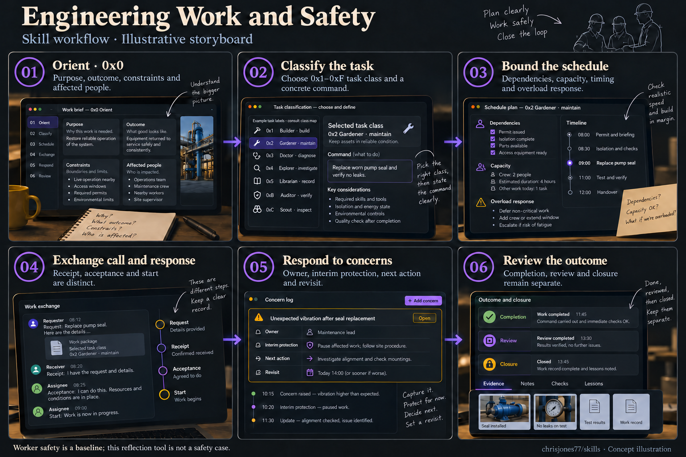
Read the workflow transcript
- Orient · 0x0 — purpose, outcome, constraints and affected people.
- Classify the task — use the canonical 0x1–0xF class and command map; the maintenance example is 0x2 Gardener / maintain.
- Bound the schedule — dependencies, capacity, timing and overload response.
- Exchange call and response — receipt, acceptance and start are distinct.
- Respond to concerns — owner, interim protection, next action and revisit.
- Review the outcome — completion, review and closure remain separate.
Worker safety is a baseline; this reflection tool is not a safety case.
Human acceptance: pending.
Forward-Deployed AI Engineer
Canonical skill · Full PNG
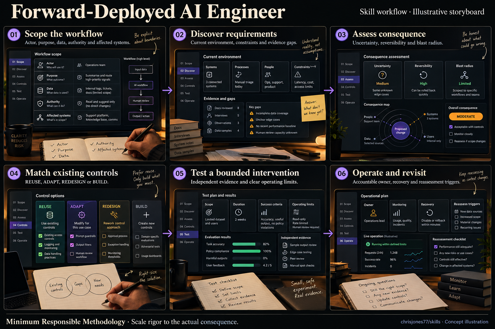
Read the workflow transcript
- Scope the workflow — actor, purpose, data, authority and affected systems.
- Discover requirements — current environment, constraints and evidence gaps.
- Assess consequence — uncertainty, reversibility and blast radius.
- Match existing controls — REUSE, ADAPT, REDESIGN or BUILD.
- Test a bounded intervention — independent evidence and clear operating limits.
- Operate and revisit — accountable owner, recovery and reassessment triggers.
Minimum Responsible Methodology · Scale rigor to the actual consequence.
Human acceptance: pending.
Image and Card Coverage Harness
Canonical skill · Full PNG
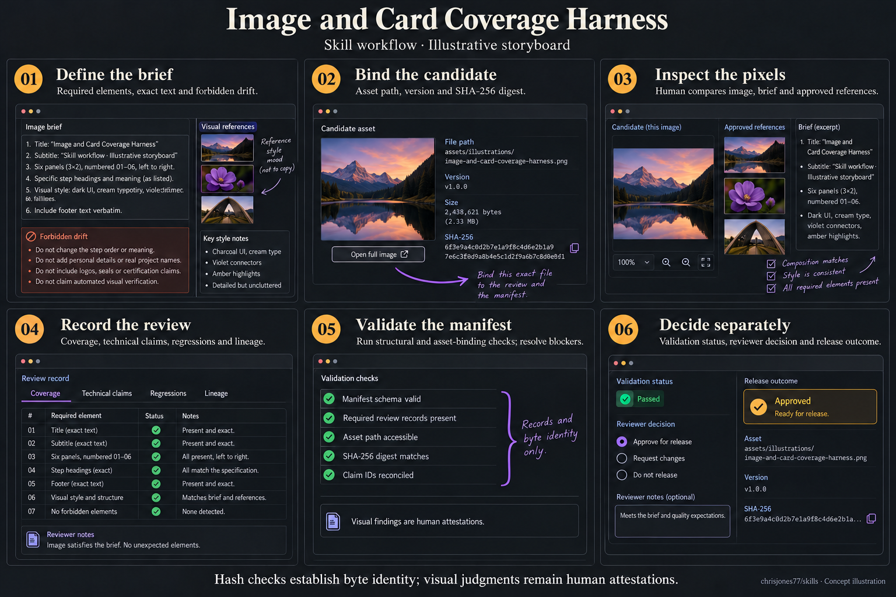
Read the workflow transcript
- Define the brief — required elements, exact text and forbidden drift.
- Bind the candidate — asset path, version and SHA-256 digest.
- Inspect the pixels — declared reviewer compares the candidate, brief and references.
- Record the review — identify reviewer kind; cover geometry, action, text and timing.
- Validate the manifest — run structural and asset-binding checks; resolve blockers.
- Decide separately — assistant review stays HOLD until actual human acceptance evidence exists.
Hash checks establish byte identity. Assistant review is not human acceptance.
Human acceptance: pending.
PEO Practice Guideline Reference
Canonical skill · Full PNG
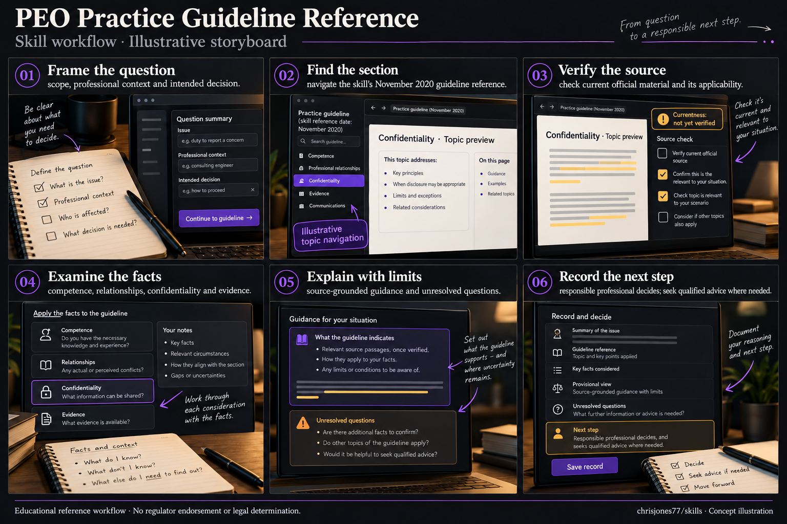
Read the workflow transcript
- Frame the question — scope, professional context and intended decision.
- Find the section — navigate the skill's November 2020 guideline reference.
- Verify the source — check current official material and its applicability.
- Examine the facts — competence, relationships, confidentiality and evidence.
- Explain with limits — source-grounded guidance and unresolved questions.
- Record the next step — responsible professional decides; seek qualified advice where needed.
Educational reference workflow · No regulator endorsement or legal determination.
Human acceptance: pending.
Stickler Prime
Canonical skill · Full PNG
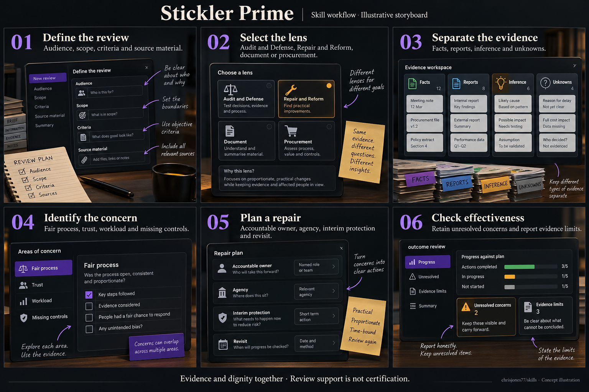
Read the workflow transcript
- Define the review — audience, scope, criteria and source material.
- Select the lens — Audit and Defense, Repair and Reform, document or procurement.
- Separate the evidence — facts, reports, inference and unknowns.
- Identify the concern — fair process, trust, workload and missing controls.
- Plan a repair — accountable owner, agency, interim protection and revisit.
- Check effectiveness — retain unresolved concerns and report evidence limits.
Evidence and dignity together · Review support is not certification.
Human acceptance: pending.
Build Music Video
Canonical skill · Full PNG
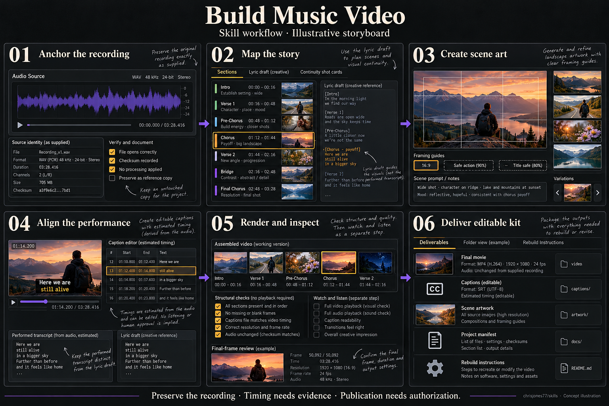
Read the workflow transcript
- Anchor the recording — retain supplied soundtrack identity, sources and corrections.
- Map the story — connect sections, lyric payoffs and continuity before choosing shots.
- Create scene art — use the output geometry and inspect subjects, action and safe areas.
- Align the performance — separate lyric draft, performed transcript and editable captions; label estimated timing.
- Render and inspect — distinguish structural checks from watching, listening and final-frame review.
- Deliver editable kit — retain movie, captions, artwork, manifest and rebuild instructions.
Preserve the recording · Timing needs evidence · Publication needs authorization. Sample durations, file sizes and frame counts in the image are fictional and must not be used as calculations.
Human acceptance: pending.
Farmer Jones Victory Garden
Canonical skill · Full PNG
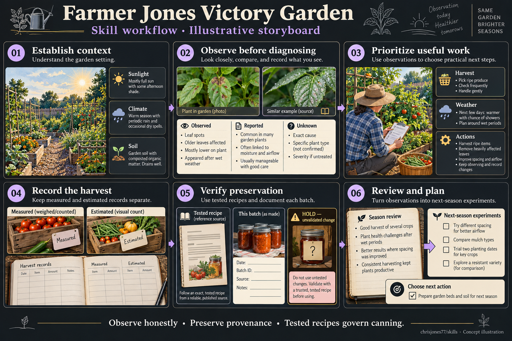
Read the workflow transcript
- Establish context — climate, season, sunlight, soil, labour and equipment.
- Observe before diagnosing — separate observed, measured, reported, inferred and unknown.
- Prioritize useful work — distinguish urgent, beneficial and optional actions.
- Record the harvest — keep measurements and estimates separate, with source and method.
- Verify preservation — use an exact authoritative tested recipe; hold unsupported changes.
- Review and plan — turn season evidence into bounded next-season experiments.
Observe honestly · Preserve provenance · Tested recipes govern canning. Illustration is not field inspection, recipe validation or safety certification.
Human acceptance: pending.